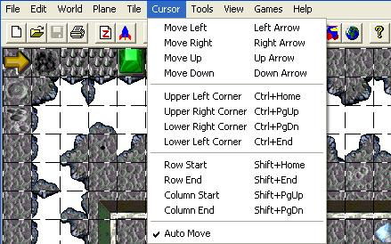

| Cursor Menu  |
||||
|---|---|---|---|---|
| Example: map is 32 Tilez in width and 24 Tilez in height, cursor currently at X=10, Y=10; result is shown as X=X, Y=Y. |
||||
| Cursor Movement | Key combination | Result | Description | |
| Move Left | Left Arrow | 9 | 10 | Move cursor one Tile to the left |
| Move Right | Right Arrow | 11 | 10 | Move cursor one Tile to the right |
| Move Up | Up Arrow | 10 | 9 | Move cursor one Tile toward the top |
| Move Down | Down Arrow | 10 | 11 | Move cursor one Tile toward the bottom |
| Note: The Arrow keys will move one Tile if tapped, or move continuously if held down. | ||||
| Upper Left Corner | Ctrl+Home | 0 | 0 | Move cursor to X=0, Y=0 |
| Upper Right Corner | Ctrl+Page Up | 31 | 0 | Move cursor (up) to X=(width-1), Y=0 |
| Lower Right Corner | Ctrl+Page Down | 31 | 23 | Move cursor (down) to X=(width-1), Y=(height-1) |
| Lower Left Corner | Ctrl+End | 0 | 23 | Move cursor (down) to X=0, Y=(height-1) |
| Row Start | Shift+Home | 0 | 10 | Move cursor to X=0, Y=(current) |
| Row End | Shift+End | 31 | 10 | Move cursor to X=(width-1), Y=(current) |
| Column Start | Shift+Page Up | 10 | 0 | Move cursor to X=current), Y=0 |
| Column End | Shift+Page Down | 10 | 23 | Move cursor to X=current), Y=(height-1) |
| AutoMove | (un)checkmark | This feature ((un)checkmarked) specifies whether or not you would like the next tile (to the right) to be highlighted when placing a tile. For example, when you use the spacebar to place a tile, after the new tile is placed the tile to the right will then be highlighted. This allows the user to hold the spacebar down and replace multiple tiles with the one currently selected in the "Tile Selection Window." | ||